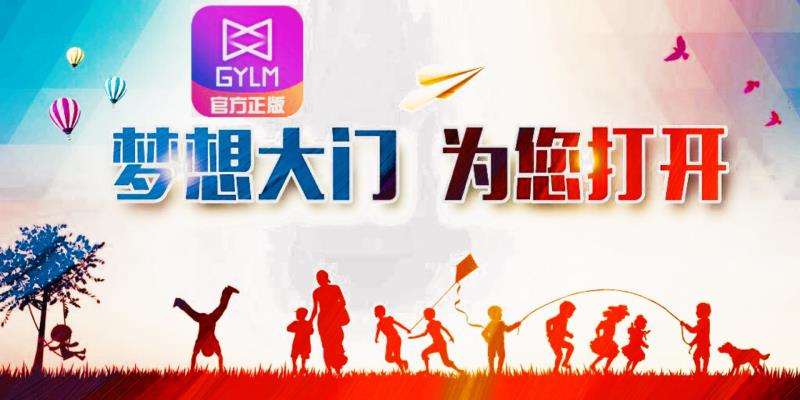
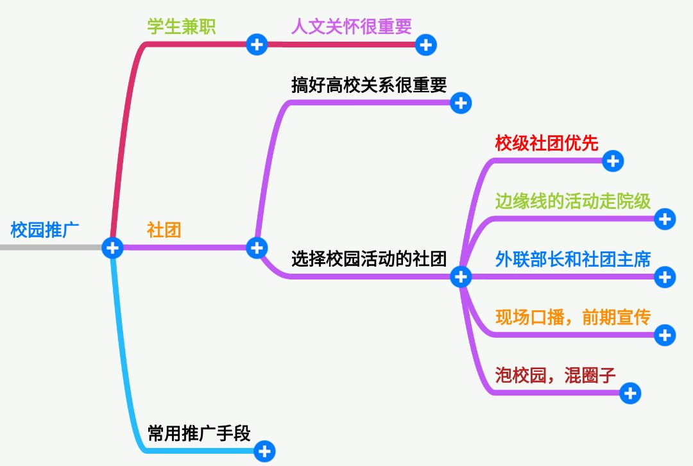
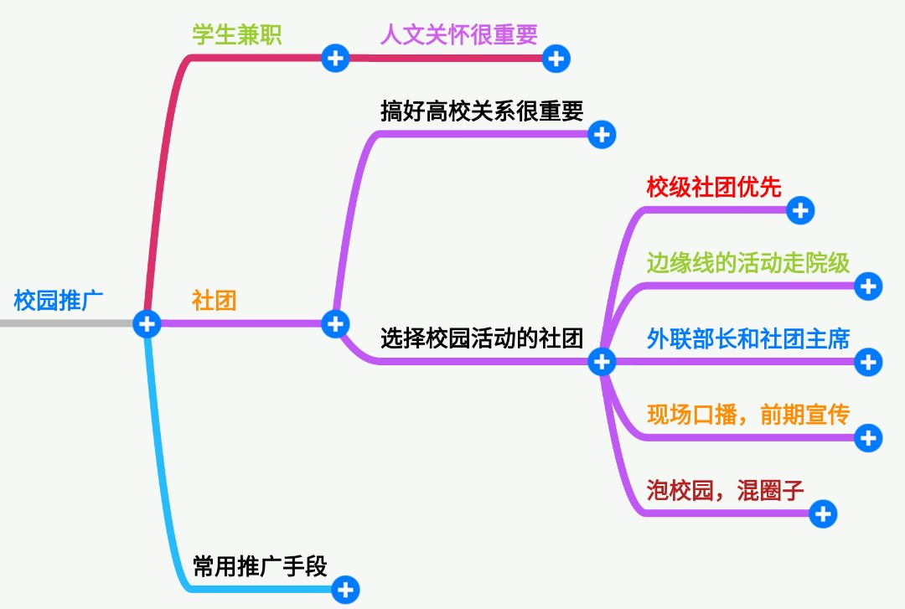
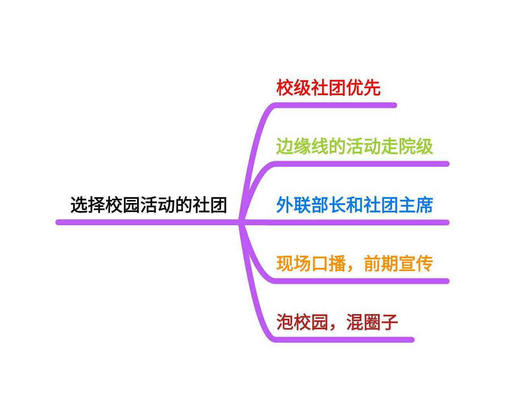
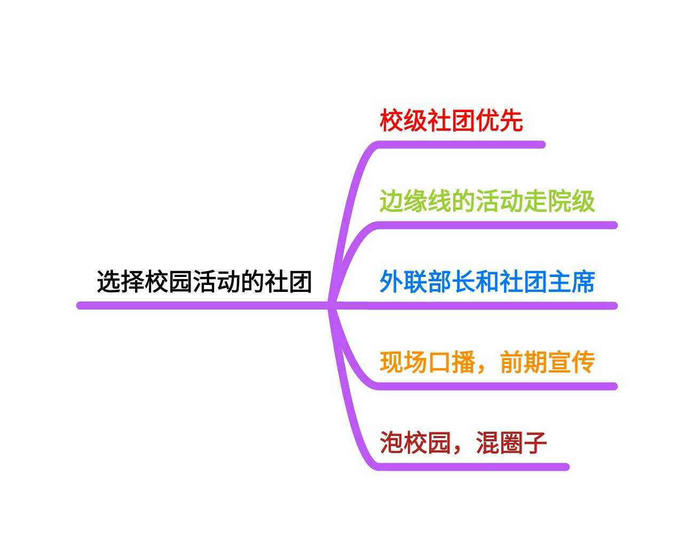
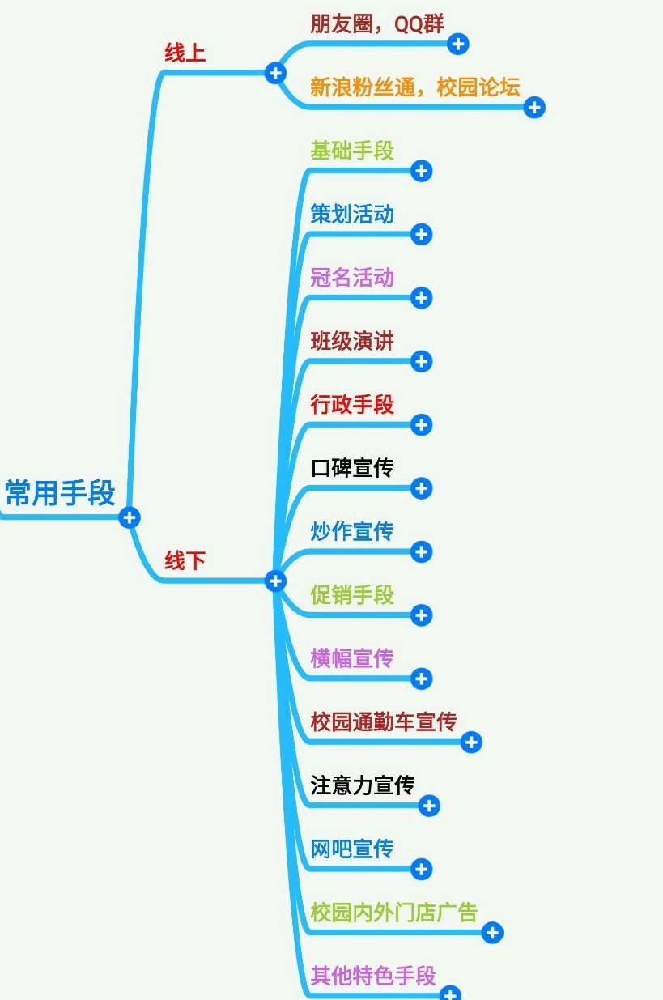
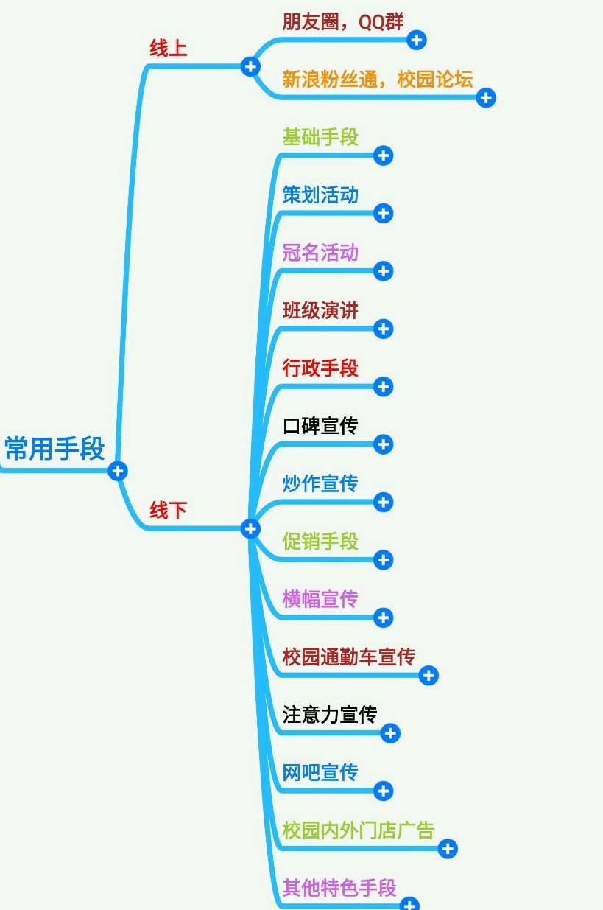

如何更有效的在大学校园推广
如何更有效的在大学校园推广
本身我也是一名在校大学生，通过高佣联盟，实现了我的梦想，在学校边学习，也边解决了自己的生活费

接下来我分享一下我是如何校园推广的，以及一些关于大学校园的推广方式方法！
校园推广是一种针对学生群体展开的综合推广方式，并不限于校园内地推这一项，实际上覆盖了线上线下各类的校园生活。
做校园推广之前，首先需要判断的就是学生群体是否属于你的核心用户，不同地区、学校、院系的学生群体的消费能力、兴趣喜好等也各有不同，根据不同的群体可进一步具体分析。
所有的分享不过是给自己加深印象的同时，顺便也让愿意去了解高佣的人获得更适合的信息而已。
抛开传统行业，且看现在的互联网科技圈，大家的目标都直勾勾向着90后，校园市场是一个大部分推广人员都虎视眈眈的大蛋糕。我们常见的校园推广手段：校招、讲座、落地活动、校园大使等等，目的也都是把产品推到学生群体中去。
而地推负责人在进入校园市场时最喜欢的招数就是学生兼职和社团。招数大家都懂，下面我们来聊聊如何运用好这两个法宝。
先给大家理一下思路，做推广之前，脑子里应该大致有些想法：


1
学生兼职---人文关怀很重要
人文关怀在任何公司、团队都被很看重，在我们校园地推团队中更是如此，人们常有的误区是把学生当做廉价劳动力，又或者觉得用钱能摆平一切。用钱可以买到学生去给你做推广，让同学装软件的服务，多少钱对应多少量，如果KPI太高，可能就会使歪招刷单了。这样只能是等价交换，不是我们地推人的使命。我常说，地推我们是专业的，专业的人做专业的事，地推的目的是把高佣联盟推广到爱购物的用户手中，刷单在这个行业应当是被鄙视的行为。
带学生团队其实并不是想象中那么容易，而是一件极其苦逼的事情，用行业的话说就是“带一年少活十年”。
什么都不懂，而且工作时间是早上5点-7点，中午11点-13点，晚上18点-22点，这个恰巧是很多人的休息时间，你需要一直都在，因为他们随时会有问题找你，人心是这个环节中最重要的部分，你把学生当廉价劳动力，得到的当然只是冰冷的数据，这跟恋爱一样，你的付出学生们感受的到，你认真就会收获他们的尊敬和超强的执行力。而我们都知道执行力在地推过程中又是相当重要的。
在学生团队面前，你不仅要承担一个管理者的身份，还要承担一个导师的角色。你需要像保姆一样嘘寒问暖，也需要像灯塔一样为他们解惑。
我自己和一些同学聊天间，都明显能感觉的到，待遇对他们来说不是最重要的，大部分学生要的是团队的归属感、好玩、精神层面的鼓励。所以从一开始，就不应该以物质来吸引学生加入团队，但当他们出成绩时，哪怕自己掏钱，也要给予奖励，或者是实习机会等等。
这是一个玩起来就超级有价值的团队，你当它是一项事业而非职业去做，才能有效果。
听起来不亚于一场自主的创业吧。这样的一个学生兼职团队建立起来后，可以非常有实力的一个团队！
另外，学生的惰性还是比较高，而且很多都是眼高手低的那种，很有可能分分钟不干了。
作为校园渠道的负责人，没必要关注每个人的去留，保证大区的队伍稳定即可，做到绝对的放权和信任很有必要，当然这是建立在对自己的人格魅力非常自信的基础上。
2
社团---搞好高校关系有必要
通过与学校社团等机构合作，可以直接切到学校的学生处。这是性价比较高的方式，但同时也需要非常了解校园市场现状。
举个例子：在100所高校进行海报覆盖并不难，但都能保证覆盖质量就没那么容易了，要知道，在学校贴海报需要三五张大海报连着贴才有视觉效果，类似的经验并非人人都有。
做校园活动时，一定要做好选择，可以先从以下5个方面入手：


做校园活动时社团的选择：
1）校级社团优先，因为校级社团招新竞争比较激烈，新入社的小伙伴们，一本身就很有活力，二是进校级社团的小伙伴一般都希望凭借良好的表现以期在过程中锻炼自己或为自己来年当官做主攒点晋升资本。因此校级社团的小伙伴的执行力一般来说比较强（学生会慎找，因为团委的关系，他们的底线是最高的，很多活动做不来，而且由于找他们的人太多，有意无意的店大欺客也是难免的，建议找社团联合会或青年志愿者联合会）
2）边缘线的活动尽量走院级社团，一般院级社团的审核标准比起校级社团稍微宽松一些（但也不要太大希望），所以在审批边缘线的活动，可能找院级社团就批过了，而且费用一般来说比起校级社团的要价，院级社团的要价会更低一点。
3）和社团负责人谈的时候，外联部部长和社团主席是KOL，一定要搞定，当然如果能直接搞定校团委的书记，那就最好了。
4）做校园活动的时，赞助校园活动（十佳歌手，新生晚会）是最具性价比的，固有的人气，现场的口播，漫长的前期宣传（至少一个礼拜），你还奢求什么？
5）校园也有自己的圈子，获取其中一个人的信任，对于拓展其他学校和同一学校换届的传承的好处都是大大的，所以泡校园，混圈子你懂得！
常用推广方式：线上&线下


线上方式：
1、朋友圈、QQ群
线上校推建议充分借助校园大使等大学生团队来进行。他们本身也是核心用户，更懂得根据用户心理去做推广。首先要根据不同的学生，下载不同的二维码图片，通过校推人员将高佣联盟软推或者硬推给自己的朋友，例如舍友，同班同学等，也可让朋友帮忙推荐给朋友；再则是在朋友圈、QQ群、人人主页推荐、分享自己编写的高佣联盟领取优惠券，或者可以通过高佣赚钱的文章、等等，关键要做好激励机制。
2、新浪粉丝通、校园论坛
大学生通常会关注几个固定的学校账号，因此粉丝通的投放计划也简单。每个学校基本都有自己的校内论坛，自己的杂志、报刊、网络媒体等，为了让网站有更多的宣传机会，校园大使通常会选择写一些软文发表在相关媒体上。
其他，学校百度贴吧、人人网虽然目前人人唱衰，当不妨作为常规渠道进行一些简单的优惠券文章展示等。
线下方式：
1、基础手段：宣传册、海报、传单、卡片、楼栋号、日历、课程表、标尺、友情提示等，这些属于基础设施建设。楼栋号用来提醒大家到了几楼，友情提示一般为：“请保持安静、中午休息时间请勿打扰、保护环境等”。
2、策划活动：比如校内网曾经成功策划了免费包车送学生到火车站的活动，再比如有的SNS网站在大学校园举办娱乐活动、爱心活动等等。
3、冠名活动：与策划活动不同的是，冠名活动不是自己举办的。一般形式为：“**网预祝*****活动圆满成功”。
4、班级演讲：一个班一个班巡回演讲的方式，虽然比较累，但是效果往往很好。一是受益面广，而是具有直接性。
5、行政手段：部分校园大使在学校人脉很广，或者自己本身就是团委学生会、社团主要干部，所以采用行政手段，强制他人注册。
6、口碑宣传：见到人就提起高佣联盟，或者有能力的建立自己的宣传网站，比如，有的校园大使在重要会议、演讲要展示幻灯片的时候，往往附带宣传网站。
7、炒作宣传：校园大使有条件的，往往喜欢在特定条件下制作炒作事件。这样的情况往往以事件为标志。
8、促销手段：即注册送礼品、或者注册可以获得优惠之类。很多人都知道，校内网当初是用鸡腿和可乐换来的用户。
9、横幅宣传：横幅不是每个校园大使都有这个关系可以挂好，但是还是有不少人采用这个手段。主要在于横幅的宣传效果往往很大，尤其挂在主干道路上的横幅，更是能吸引人群的目光。
10、校园通勤车宣传：比较大的学校往往有专门的通勤车或者校车，主要供学生上下课乘坐。在车体做广告往往能够收到不错的效果。因为通勤车每天都在学校穿梭。
11、注意力宣传：比如，校内网有专门的T恤，学校里面经常可以看到穿着校内网服装的人在校园里面逛来逛去。由于服装的特殊性，所以很容易吸引人的注意力。
12、网吧宣传：51.COM算是在网吧推广最成功的案例。但是，校园SNS往往也可以在网吧获得不错的效果。通常的手段为海报、制作临时上机卡、友情提示、电脑号、设为浏览器主页等。
13、校园内外门店广告：小超市、打印店、奶茶店、餐馆、理发店、眼镜店等店铺不分大小都可以谈合作，张贴二维码广告以供下载。
14、其他特色手段：
（1）图书馆杂志厅插书签。图书馆里面的杂志厅通常比较火爆。插入一张精美的书签往往能够起到不错的效果。
（2）学校周末放电影，中途插入FLASH宣传片。此手段收益面广，而且刺激性很大。
（3）发展院系大使。每个校园大使下面又发展了院大使、系大使。此手段实践性很强。
（4）学校举办报告会、演讲、大型活动，在活动开始前，每张桌子上放上一张精美的广告。通常，在这种环境下，大家有更充分的时间。
（5）学校餐厅开餐前，放上一张小广告，让大家吃完饭小憩时刻有个东西可以阅读。
（6）黑板宣传，在教室黑板上写宣传标语。
过来人的几点提醒：
1、校园地推的监控是痛点，需要有计划，有监督；在学校的选择上要有规划；
2、做校园推广脸皮必须厚点，大部分学生都很无聊，稍微拉一下就会过来看，高冷那只是少数；
3、学生的传播性很好，发现不错的东西很容易就把寝室人全部拉过来，所以活动、海报、文案都尽量做要得新奇有趣；
4、如果推广时只是一味的让别人注册，学生不知道你的应用是干嘛的，走量的形式就是一个坑；
5、高佣联盟app在校园进行一段时间的品牌建设是基础，等在学校有了一定的知名度，再去跑量，否则几乎没有留存；
6、充分利用好线上的平台，论坛、贴吧、微博、微信，学生对于自己学校的信息很是关注；
7、校园推广人员的能力参差不齐，较难管理；团队招募前期主要是招新人，能力不足可以培养，最主要的是团队构建，及时补充新鲜血液；后期就要做选拔，优胜劣汰留下比较优秀的人